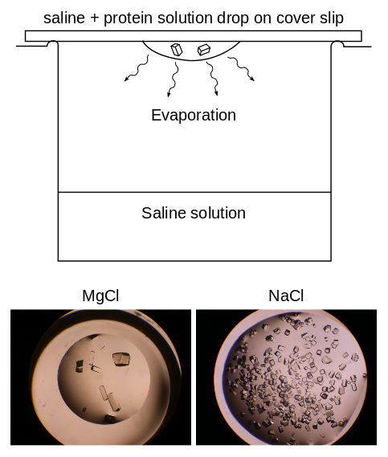

TITLE: Content
Research - Protein crystallography
From molecules to crystals - structural studies of formyltetrahydrofolate synthetase
FTHFS structure

Description
FTHFS crystal formation
Description
Motivation and goals
Paragraph
- Research into finding a cure for cancer (or some types of cancer)
- Cancer cells reproduce rapidly and therefore have a high metabolism
- FTHFS help metabolize ATP (energy source) within cells
- If we understand the physics and chemistry of FTHFS, then we may be able to inhibit the energy flow that fuels cancer cell reproduction
- Understanding the chemistry requires identifying structure
- Identifying structure requires X-ray crystallography
- Crystallography requires crystal production
- For ease of access, work on crystallization with bacteria versions of FTHFS (my work)
- The crystals we formed were saline crystals with protein suspended in crystals
Method for forming crystals
Paragraph
- Culture E. coli bacteria which have the desired FTHFS protein
- Cell lysis vis sonication
- Centrifuge remnants and extract desired protein
- Vapor diffusion method for growing cells from protein solution
- In a cell, add saline solution; on cover slip, add protein solution and saline solution; wait
- Findings: Salt material and concentration matters. Best crystallization results with MgCl.